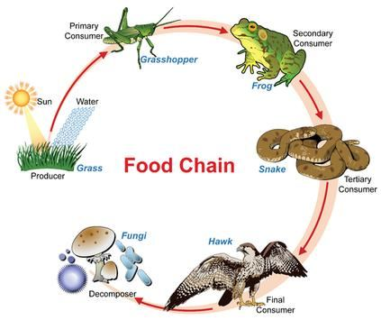
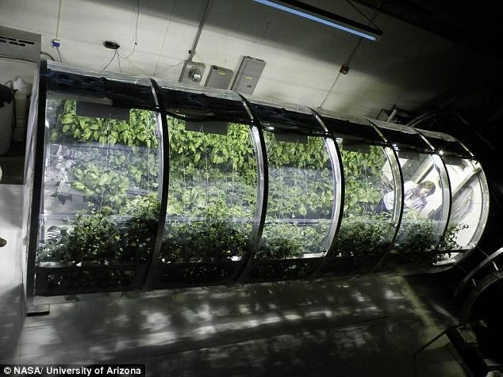

However, the worshippers of Allah are guarded by the angels. ―He is the Irresistible from above over His worshippers, and He sets guardians (angels) over you. At length, when death approaches one of you, Our angels take his soul (nafs), and they never fail in their duty.‖ [Al Quran 6:61]
তবে আল্লাহর ইবাদতকারীরা ফেরেশতাদের দ্বারা হেফাজত করেন। - তিনি তাঁর উপাসকদের উপর থেকে অপ্রতিরোধ্য এবং তিনি তোমাদের উপর অভিভাবক (ফেরেশতা) নিযুক্ত করেন। দীর্ঘ সময়ে, যখন তোমাদের কারো মৃত্যু ঘনিয়ে আসে, তখন আমাদের ফেরেশতারা তার আত্মা (নফস) নিয়ে যায় এবং তারা তাদের দায়িত্বে কখনই ব্যর্থ হয়।'' [আল কুরআন 6:61]
A jinni can only mount on a Pagan (Idol Worshipper).
একটি জিনি শুধুমাত্র একটি পৌত্তলিক (মূর্তি উপাসক) উপর আরোহণ করতে পারেন.
2. Why a Jinni mounts on a Human
2. কেন একটি জিনি একটি মানুষের উপর মাউন্ট
A jinni is a powerful creature, but its life is not as fulfilling as human life. When a jinni mounts a human, the human body is shared by both the jinni and the human. The jinni begins to experience life as the human does, making its existence more joyful and enticing. If the human drinks wine, the jinni, possessing him, also partakes; if the human eats pork, the jinni eats with him; and if the human commits adultery, the jinni is with him in the act:
একটি জিনি একটি শক্তিশালী প্রাণী, কিন্তু এর জীবন মানুষের জীবনের মতো পরিপূর্ণ নয়। যখন একটি জিনি একজন মানুষকে মাউন্ট করে, তখন মানবদেহ জিনি এবং মানুষ উভয়ই ভাগ করে নেয়। জিনি মানুষের মতো জীবন অনুভব করতে শুরু করে, তার অস্তিত্বকে আরও আনন্দদায়ক এবং লোভনীয় করে তোলে। যদি মানুষ মদ পান করে, তবে তার অধিকারী জিনিও অংশ নেয়; মানুষ যদি শুকরের মাংস খায়, জিনি তার সাথে খায়; এবং যদি মানুষ ব্যভিচার করে, জিনি তার সাথে কাজ করে:
―(God) said: "Go thy way; if any of them follow thee, verily Hell will be the recompense of you - an ample recompense. And arouse those whom thou canst among them, with thy voice; make assaults on them with thy cavalry and thy infantry; mutually share with them wealth and children; and make promises to them." But Satan promises them nothing but deceit. [Al Quran 17:63-64] 3. Harm of Mounting
"(ঈশ্বর) বলেছেন: "তোমার পথে যাও, যদি তাদের কেউ তোমাকে অনুসরণ করে, তবে অবশ্যই জাহান্নাম হবে তোমার প্রতিদান-প্রচুর প্রতিদান। এবং তাদের মধ্যে যাদের পারো, তোমার কণ্ঠে জাগিয়ে দাও; তোমার অশ্বারোহী ও পদাতিক দিয়ে তাদের উপর আক্রমণ কর; তাদের সাথে পারস্পরিকভাবে ভাগ করে নাও এবং তাদের সাথে সম্পদ ও সন্তানদের প্রতিশ্রুতি দাও।" কিন্তু শয়তান তাদেরকে প্রতারণা ছাড়া আর কিছুই দেয় না। [আল কুরআন 17:63-64] 3. মাউন্ট এর ক্ষতি
A satan-jinni is created from anti-matter. It cannot directly mount a human; instead, it infuses itself into a human‘s body under the protective covering of his (jinni‘s) nafs (soul). Once inside, the jinni‘s body and the human‘s body become connected through their nafses. Thereby, an idol worshipper gets possessed by a jinni, but He does not feel it. His nafs learns to sustain both his body and the jinni‘s body together and becomes deformed. On the Day of Judgment, he will resurrect in a devil-human form. A human will be resurrected with a Set of DNA Double Helix (46) he had on the Earth. It will form a cell and multiply it to form the body. A cell can multiply and form a body, but it does not make perfect shape. A zygote kept in a test tube in the most favorable condition multiplies and form a lump of flesh. It should do the same in a mother‘s womb as well, because there is nothing special in a womb. Allah steers the shaping in the mother‘s womb. A human will be resurrected with the same set of DNA Double Helix Molecules (46 chromosomes) he had on the Earth. The DNA Molecules will form a cell, which will multiply to create the body. While a single cell can multiply to form a body, it doesn‘t naturally result in a perfect shape. It has been observed that a zygote, even when kept in a test tube under the most favorable conditions, multiplies and forms only a lump of flesh. The same should occur in a mother's womb, as there is nothing inherently special in it. It is Allah who guides the shaping of a body within the womb. Through the process of formation in the mother‘s womb, one‘s nafs is designed and programmed with the necessary information to assist in resurrection. Life on Earth further develops and matures the nafs, which becomes fixed at the time of death. Thus, both in the womb and on Earth, the body is like a mold, while the nafs is like the cast. At the time of Resurrection, neither the mother's womb nor Allah‘s steering will be needed. When a set of DNA molecules is paired with one's nafs, the body will grow on the land, much like plants grow. The nafs will then assist the DNA code in developing the body, with the nafs acting as the mold and the developing body as the cast. During the Resurrection, a deformed nafs will produce a deformed human, taking on a devil-human form, partly composed of matter and partly of anti-matter. This is what the verses under discussion convey: ―But those who have earned satans—recompense is a satan (jinn) like it. Ignominy will cover their (faces); no defender will they have from Allah. Their faces will be covered, as it were with pieces from the depth of the darkness of night; they are companions of the Fire; they will abide therein forever!‖ The same is said in the following verses as well:
শয়তান-জিন্নি সৃষ্টি হয় অ্যান্টি ম্যাটার থেকে। এটি সরাসরি একজন মানুষকে মাউন্ট করতে পারে না; পরিবর্তে, এটি তার (জিনের) নফসের (আত্মার) সুরক্ষামূলক আবরণের অধীনে একজন মানুষের দেহে নিজেকে প্রবেশ করায়। ভিতরে প্রবেশ করলে জিন্নীর দেহ এবং মানুষের দেহ তাদের নফসের মাধ্যমে সংযুক্ত হয়ে যায়। এর ফলে, একজন মূর্তি পূজারী একটি জিন দ্বারা আবিষ্ট হয়, কিন্তু সে তা অনুভব করে না। তার নফস তার শরীর এবং জ্বীনের শরীর উভয়কে একসাথে টিকিয়ে রাখতে শেখে এবং বিকৃত হয়ে যায়। কিয়ামতের দিন সে শয়তান-মানব রূপে পুনরুত্থিত হবে। একজন মানুষ পৃথিবীতে তার ডিএনএ ডাবল হেলিক্স (46) সেটের সাথে পুনরুত্থিত হবে। এটি একটি কোষ গঠন করবে এবং এটিকে গুণ করে শরীর গঠন করবে। একটি কোষ সংখ্যাবৃদ্ধি করতে পারে এবং একটি শরীর গঠন করতে পারে, কিন্তু এটি নিখুঁত আকৃতি তৈরি করতে পারে না। সবচেয়ে অনুকূল অবস্থায় একটি টেস্টটিউবে রাখা জাইগোট সংখ্যাবৃদ্ধি করে এবং মাংসের পিণ্ড তৈরি করে। এটি মায়ের গর্ভেও একই কাজ করা উচিত, কারণ গর্ভে বিশেষ কিছু নেই। আল্লাহ মাতৃগর্ভে গঠন পরিচালনা করেন। একজন মানুষ পৃথিবীতে তার একই ডিএনএ ডাবল হেলিক্স অণু (46 ক্রোমোজোম) এর সাথে পুনরুত্থিত হবে। ডিএনএ অণুগুলি একটি কোষ তৈরি করবে, যা শরীর তৈরি করতে সংখ্যাবৃদ্ধি করবে। যদিও একটি একক কোষ একটি দেহ গঠনের জন্য সংখ্যাবৃদ্ধি করতে পারে, এটি স্বাভাবিকভাবেই একটি নিখুঁত আকারে পরিণত হয় না। এটি দেখা গেছে যে একটি জাইগোট, এমনকি সবচেয়ে অনুকূল পরিস্থিতিতে একটি পরীক্ষা টিউবে রাখা হলেও, সংখ্যাবৃদ্ধি করে এবং শুধুমাত্র একটি মাংসের পিণ্ড তৈরি করে। মাতৃগর্ভেও একই ঘটনা ঘটতে হবে, কারণ এতে সহজাতভাবে বিশেষ কিছু নেই। আল্লাহই গর্ভের মধ্যে দেহ গঠনের পথ দেখান। মাতৃগর্ভে গঠনের প্রক্রিয়ার মাধ্যমে, একজনের নফসকে পুনরুত্থানে সহায়তা করার জন্য প্রয়োজনীয় তথ্য দিয়ে ডিজাইন এবং প্রোগ্রাম করা হয়। পৃথিবীতে জীবন আরও বিকশিত হয় এবং নফসকে পরিপক্ক করে, যা মৃত্যুর সময় স্থির হয়ে যায়। সুতরাং, গর্ভে এবং পৃথিবীতে উভয়ই দেহ একটি ছাঁচের মতো, আর নফস হল ঢালাইয়ের মতো। কেয়ামতের সময় মাতৃগর্ভ বা আল্লাহর স্টিয়ারিং এর প্রয়োজন হবে না। যখন ডিএনএ অণুর একটি সেট একজনের নফসের সাথে যুক্ত হয়, তখন দেহটি জমিতে বৃদ্ধি পাবে, অনেকটা গাছপালা বৃদ্ধির মতো। তখন নফস দেহের বিকাশে ডিএনএ কোডকে সহায়তা করবে, নাফস ছাঁচ হিসাবে কাজ করবে এবং বিকাশকারী দেহটি কাস্ট হিসাবে কাজ করবে। কেয়ামতের সময়, একটি বিকৃত নফস একটি বিকৃত মানব তৈরি করবে, একটি শয়তান-মানুষের রূপ ধারণ করবে, আংশিকভাবে পদার্থ এবং আংশিক বিরোধী পদার্থের সমন্বয়ে গঠিত। আলোচ্য আয়াতগুলো এটাই ইঙ্গিত করে: “কিন্তু যারা শয়তান উপার্জন করেছে- তাদের প্রতিদান হল শয়তান (জিন)। অবজ্ঞা তাদের (মুখ) আবৃত করবে; আল্লাহর পক্ষ থেকে তাদের কোন রক্ষাকারী থাকবে না। তাদের মুখ ঢেকে রাখা হবে, যেমনটি ছিল রাতের অন্ধকারের গভীর থেকে টুকরা দিয়ে; তারা জাহান্নামের সঙ্গী। তারা সেখানে চিরকাল থাকবে!” নিম্নলিখিত আয়াতেও একই কথা বলা হয়েছে:
―Even if the wrongdoers had all that there is on earth and as much more would they offer it for ransom from the pain of the Penalty on the Day of Judgment! But something will confront them from God, which they could never have counted upon—and will become apparent to them satans, what they earned, and will surround them what they used to mock!‖ [Al Quran 39: 47-48]
জালেমদের কাছে পৃথিবীতে যা কিছু আছে এবং তার চেয়েও বেশি কিছু থাকতো, তাও যদি বিচারের দিন শাস্তির যন্ত্রণা থেকে মুক্তিপণ হিসেবে পেত! কিন্তু আল্লাহর পক্ষ থেকে তাদের সামনে এমন কিছু আসবে, যা তারা কখনই গণনা করতে পারেনি-এবং তাদের কাছে শয়তান হয়ে উঠবে, তারা যা অর্জন করেছে এবং তাদের ঘিরে ফেলবে যা তারা উপহাস করত!'' [আল কুরআন 39: 47-48]
He will be so deformed in his devil-human shape that he will only be recognizable by his marks. He will exist as a multidimensional being, able to interact with anti- creatures. After the Final Judgment, he will remain in this universe (Samawaat), which is filled with burning galaxies. While galaxies serve as homes for jinn, they are hell for humans. The human will be a forgotten vicegerent of God, condemned to live in that galaxy forever.
সে তার শয়তান-মানব আকৃতিতে এতটাই বিকৃত হবে যে সে কেবল তার চিহ্ন দ্বারাই চেনা যাবে। তিনি একটি বহুমাত্রিক সত্তা হিসাবে বিদ্যমান থাকবেন, বিরোধী প্রাণীর সাথে যোগাযোগ করতে সক্ষম হবেন। চূড়ান্ত বিচারের পরে, তিনি জ্বলন্ত ছায়াপথে ভরা এই মহাবিশ্বে (সামাওয়াত) থাকবেন। গ্যালাক্সিগুলো জ্বীনদের আবাসস্থল হিসেবে কাজ করলেও তারা মানুষের জন্য নরক। মানুষ হবে ঈশ্বরের বিস্মৃত ভাইসার্জেন্ট, চিরকাল সেই ছায়াপথে বসবাসের নিন্দা।
One day We shall gather them all together. Then We shall say to those who joined gods: "Stop at your place; you and your partners.‖ Then we will separate them, and their "partners" shall say: "It was not us that you worshipped, enough is God for a witness between us and you, we certainly knew nothing of your worship of us!" There will every soul prove the deeds it sent before. They will be brought back to God, their rightful Lord, and their invented falsehoods will leave them in the lurch.
একদিন আমি তাদের সবাইকে একত্র করব। অতঃপর আমরা তাদের দেবতাদের সাথে যোগদানকারীদের বলব: "তোমরা নিজেদের জায়গায় থামো, তোমরা এবং তোমাদের অংশীদাররা।" তারপর আমরা তাদের আলাদা করে দেব, এবং তাদের "অংশীদার" বলবে: "তোমরা আমাদের উপাসনা করনি, আমাদের এবং তোমাদের মধ্যে সাক্ষীর জন্য ঈশ্বরই যথেষ্ট, আমরা অবশ্যই আমাদের সম্পর্কে আপনার ইবাদতের কিছুই জানতাম না!" সেখানে প্রত্যেক ব্যক্তি তাদের কৃতকর্মগুলিকে মিথ্যা প্রমাণ করবে, যা তাদের প্রভুর কাছে প্রেরিত হয়েছে, তারা তাদের প্রভুর কাছে ফিরে আসবে এবং তারা তাদের প্রভুর কাছে ফিরে আসবে। তাদের অলস মধ্যে ছেড়ে.
Say: "Who provides for you from the sky and from the land? Or, who is it that has power over hearing and sight? And who is it that brings out the living from the dead and the dead from the living? And who is it that rules and regulates all affairs?" They will soon say, "God". Say: "Will you not then guard?" Such is God, your real Cherisher and Sustainer; apart from truth what but error? How then are you turned away? Thus, is the word of your Lord proved true against those who rebel; verily they will not believe.
বলুন: "কে তোমাদের জন্য আসমান ও জমিন থেকে রিযিক প্রদান করে? অথবা, শ্রবণ ও দৃষ্টিশক্তির অধিকারী কে? এবং কে আছে যে জীবিতকে মৃত থেকে এবং মৃতকে জীবিত থেকে বের করে? এবং কে সকল বিষয়ের শাসন ও নিয়ন্ত্রণ করে?" তারা শীঘ্রই বলবে, "ঈশ্বর"। বলুন, তোমরা কি হেফাজত করবে না? তিনিই ঈশ্বর, তোমাদের প্রকৃত লালন-পালনকারী। সত্য ছাড়া ভুল ছাড়া আর কি? তাহলে তোমরা কিভাবে মুখ ফিরিয়ে নিলে? এইভাবে, যারা বিদ্রোহীদের বিরুদ্ধে আপনার পালনকর্তার বাণী সত্য প্রমাণিত হয়েছে; তারা বিশ্বাস করবে না।
The above verses narrate that Allah provides food from the sky and from the land. There is energy in the food. The energy comes from the Sun (in the sky) and is stored in plants through photosynthesis. Plants absorb water and essential nutrients from the land. Thus, Allah provides food from the sky and from the land. The entry point of the energy is plant. Other animals are sustained in the Food Cycle. If there is a break in the cycle, the Life on Earth will end.
উপরের আয়াতগুলো বর্ণনা করে যে আল্লাহ আকাশ থেকে এবং জমিন থেকে খাদ্য সরবরাহ করেন। খাবারে শক্তি আছে। শক্তি সূর্য থেকে আসে (আকাশে) এবং সালোকসংশ্লেষণের মাধ্যমে উদ্ভিদে সঞ্চিত হয়। গাছপালা জমি থেকে পানি এবং প্রয়োজনীয় পুষ্টি শোষণ করে। এভাবে আল্লাহ আকাশ ও জমিন থেকে খাদ্য দান করেন। শক্তির প্রবেশ বিন্দু হল উদ্ভিদ। অন্যান্য প্রাণী খাদ্য চক্রে টিকে থাকে। চক্রে বিরতি থাকলে, পৃথিবীর জীবন শেষ হয়ে যাবে।
FIGURE 10.3: Food Cycle [Allah brings out the living from the dead and the dead from the living.] The Food Cycle is actually a system of ‗bring out living from the dead and dead from the living‘: The grasshopper dies (see figure 10.3), thus the frog is fed; the frog dies, thus the snake is fed; the snake dies, thus the Hawk is fed; the Hawk dies, thus the decomposers / fungi are fed. So, the above verses say: ‗(Allah) brings out the living from the dead and the dead from the living.‘ It means that He runs the Food Cycle. For long-term space missions, scientists have made numerous attempts to sustain the food cycle within a closed system. However, all efforts have failed. In a closed greenhouse, life can survive for a time, but the conditions needed for continuous balance eventually break down. Some species over-reproduce, while others die off, causing the environment to become destabilized. As a result, even plants, which are expected to be independent of the food cycle, die due to the degradation of the soil and atmosphere.

চিত্র 10_3 / Figure 10_3
চিত্র 10.3: খাদ্য চক্র [আল্লাহ জীবিতকে মৃত থেকে এবং মৃতকে জীবিত থেকে বের করে আনেন।] খাদ্য চক্রটি আসলে 'মৃত থেকে জীবিত এবং জীবিত থেকে মৃতকে বের করার' একটি ব্যবস্থা: ফড়িং মারা যায় (চিত্র 10.3 দেখুন), এভাবে ব্যাঙকে খাওয়ানো হয়; ব্যাঙ মারা যায়, এইভাবে সাপকে খাওয়ানো হয়; সাপ মারা যায়, এইভাবে বাজপাখি খাওয়ানো হয়; বাজপাখি মারা যায়, এইভাবে পচনশীল / ছত্রাক খাওয়ানো হয়। সুতরাং, উপরের আয়াতগুলো বলে: ‘(আল্লাহ) জীবিতকে মৃত থেকে এবং মৃতকে জীবিত থেকে বের করেন।’ এর অর্থ হচ্ছে তিনি খাদ্য চক্র পরিচালনা করেন। দীর্ঘমেয়াদী মহাকাশ মিশনের জন্য, বিজ্ঞানীরা একটি বদ্ধ ব্যবস্থার মধ্যে খাদ্য চক্রকে টিকিয়ে রাখার জন্য অসংখ্য প্রচেষ্টা করেছেন। তবে সব প্রচেষ্টা ব্যর্থ হয়েছে। একটি বদ্ধ গ্রিনহাউসে, জীবন কিছু সময়ের জন্য বেঁচে থাকতে পারে, কিন্তু ক্রমাগত ভারসাম্যের জন্য প্রয়োজনীয় শর্তগুলি শেষ পর্যন্ত ভেঙ্গে যায়। কিছু প্রজাতি অতিরিক্ত পুনরুৎপাদন করে, অন্যরা মারা যায়, যার ফলে পরিবেশ অস্থিতিশীল হয়ে পড়ে। ফলস্বরূপ, এমনকি গাছপালা, যা খাদ্যচক্র থেকে স্বাধীন বলে আশা করা হয়, মাটি ও বায়ুমণ্ডলের অবক্ষয়ের কারণে মারা যায়।
চিত্র 10_3 / Figure 10_3
―Or, Who originates creation, then repeats it, and who gives you sustenance from sky and land— god besides God? Say, "Bring forth your argument, if ye are telling the truth!" [Al Quran 27:64]
-অথবা, কে সৃষ্টির উদ্ভব, অতঃপর পুনরাবৃত্তি করে এবং কে তোমাদেরকে আসমান ও জমিন থেকে রিযিক দান করে- আল্লাহ ব্যতীত ইলাহ? বল, ‘তোমরা যদি সত্যবাদী হও, তবে তোমাদের যুক্তি উপস্থাপন কর! [আল কুরআন 27:64]
When we observe nature, we see plants, insects, birds, and mammals, but the smaller inhabitants are far more numerous. There are over a million species of fungi (about 60,000 have been recorded and studied) and more than a million species of roundworms (with hundreds of thousands recorded). There may be millions of bacteria, representing thousands of species, in a gram of soil. Life at the ground is not just an interspersion of fungi, bacteria, worms, ants, and all the rest. The condition of the micro-environment changes inch by inch from the surface. There are shifts in light and temperature, size of cavities, the chemistry of the air, soil or water, kind of food available, and the species of organisms. The combination of these properties, down to a microscopic level, defines the surface eco-system. Each species is specialist to survive and reproduce best in its particular niche. Scientists have abandoned the hope of maintaining a complete biological cycle in a closed system. However, they are focusing on keeping plants alive to serve as suppliers of vegetarian food and oxygen for astronauts.
যখন আমরা প্রকৃতি পর্যবেক্ষণ করি, আমরা গাছপালা, পোকামাকড়, পাখি এবং স্তন্যপায়ী প্রাণী দেখি, কিন্তু ক্ষুদ্র বাসিন্দারা অনেক বেশি। এখানে এক মিলিয়নেরও বেশি প্রজাতির ছত্রাক রয়েছে (প্রায় 60,000টি রেকর্ড করা হয়েছে এবং অধ্যয়ন করা হয়েছে) এবং এক মিলিয়নেরও বেশি প্রজাতির রাউন্ডওয়ার্ম (শত হাজার রেকর্ড করা হয়েছে)। এক গ্রাম মাটিতে লক্ষ লক্ষ ব্যাকটেরিয়া থাকতে পারে, হাজার হাজার প্রজাতির প্রতিনিধিত্ব করে। মাটিতে জীবন কেবল ছত্রাক, ব্যাকটেরিয়া, কৃমি, পিঁপড়া এবং বাকি সব কিছুর ছেদ নয়। মাইক্রো-এনভায়রনমেন্টের অবস্থা পৃষ্ঠ থেকে ইঞ্চি ইঞ্চি পরিবর্তিত হয়। আলো এবং তাপমাত্রা, গহ্বরের আকার, বাতাসের রসায়ন, মাটি বা জল, উপলব্ধ খাবারের ধরণ এবং জীবের প্রজাতির পরিবর্তন রয়েছে। এই বৈশিষ্ট্যগুলির সংমিশ্রণ, একটি আণুবীক্ষণিক স্তরে, পৃষ্ঠের ইকো-সিস্টেমকে সংজ্ঞায়িত করে। প্রতিটি প্রজাতিই তার বিশেষ কুলুঙ্গিতে সেরাভাবে বেঁচে থাকার এবং প্রজনন করতে বিশেষজ্ঞ। বিজ্ঞানীরা বদ্ধ ব্যবস্থায় সম্পূর্ণ জৈবিক চক্র বজায় রাখার আশা ছেড়ে দিয়েছেন। যাইহোক, তারা মহাকাশচারীদের জন্য নিরামিষ খাবার এবং অক্সিজেনের সরবরাহকারী হিসাবে পরিবেশন করার জন্য উদ্ভিদকে জীবিত রাখার দিকে মনোনিবেশ করছে।
FIGURE 10.4: Greenhouse Chamber of NASA in the University of Arizona NASA has succeeded with growing plants on the International Space Station. They are trying to develop (2010s) a lunar greenhouse chamber equipped with bio- re-generative life support system. Astronauts exhale carbon dioxide, which is introduced into the greenhouse; the plants inside can generate oxygen via photosynthesis. The water cycle inside the greenhouse begins with water that is brought along, or found at the landing area. The water is then oxygenated and enriched with nutrient salts, continuously flowing over the roots of the plants before being returned to a storage system. The greenhouse units would most likely be buried beneath the surface soil to protect against space radiation, requiring specialized lighting. LED (light-emitting diode) lights can support plant growth. Alternatively, solar light could be captured using light concentrators that track the Sun and direct the light into the greenhouse chamber via fiber optic bundles. The entire system of the lunar greenhouse should replicate the biological systems found on Earth. The soil and air will require a balanced proportion of small organisms to support long-term plant growth. Therefore, the greenhouse will need regular support from Earth. Do we ever take time to contemplate the complex systems designed to produce and sustain our nourishment?

চিত্র 10_4 / Figure 10_4
চিত্র 10.4: অ্যারিজোনা ইউনিভার্সিটিতে NASA-এর গ্রীনহাউস চেম্বার আন্তর্জাতিক মহাকাশ স্টেশনে গাছপালা বৃদ্ধিতে সফল হয়েছে৷ তারা বায়ো-রি-জেনারেটিভ লাইফ সাপোর্ট সিস্টেম দিয়ে সজ্জিত একটি চন্দ্র গ্রীনহাউস চেম্বার (2010) তৈরি করার চেষ্টা করছে। মহাকাশচারীরা কার্বন ডাই অক্সাইড ত্যাগ করে, যা গ্রিনহাউসে প্রবেশ করানো হয়; ভিতরের গাছপালা সালোকসংশ্লেষণের মাধ্যমে অক্সিজেন উৎপন্ন করতে পারে। গ্রিনহাউসের অভ্যন্তরে জলের চক্রটি সেই জল দিয়ে শুরু হয় যা সঙ্গে আনা হয়, বা অবতরণ এলাকায় পাওয়া যায়। তারপরে জল অক্সিজেনযুক্ত এবং পুষ্টিকর লবণ দিয়ে সমৃদ্ধ হয়, একটি স্টোরেজ সিস্টেমে ফিরে যাওয়ার আগে ক্রমাগত গাছের শিকড়ের উপর দিয়ে প্রবাহিত হয়। মহাকাশ বিকিরণ থেকে রক্ষা করার জন্য গ্রিনহাউস ইউনিটগুলি সম্ভবত পৃষ্ঠের মাটির নীচে সমাহিত করা হবে, বিশেষ আলোর প্রয়োজন। LED (আলো-নির্গত ডায়োড) লাইট উদ্ভিদের বৃদ্ধিকে সমর্থন করতে পারে। বিকল্পভাবে, সূর্যকে ট্র্যাক করে এবং ফাইবার অপটিক বান্ডিলের মাধ্যমে আলোকে গ্রিনহাউস চেম্বারে নির্দেশ করে এমন আলোক ঘনীভূতকারী ব্যবহার করে সৌর আলো ক্যাপচার করা যেতে পারে। চন্দ্র গ্রিনহাউসের পুরো সিস্টেমটি পৃথিবীতে পাওয়া জৈবিক সিস্টেমগুলির প্রতিলিপি করা উচিত। দীর্ঘমেয়াদী উদ্ভিদের বৃদ্ধিকে সমর্থন করার জন্য মাটি এবং বায়ুতে ছোট জীবের একটি সুষম অনুপাতের প্রয়োজন হবে। অতএব, গ্রিনহাউসের জন্য পৃথিবী থেকে নিয়মিত সহায়তার প্রয়োজন হবে। আমরা কি কখনও আমাদের পুষ্টি উৎপাদন এবং টিকিয়ে রাখার জন্য ডিজাইন করা জটিল সিস্টেমগুলি নিয়ে চিন্তা করার জন্য সময় নিই?
চিত্র 10_4 / Figure 10_4
Say: "Of your 'partners', can any originate creation and repeat it?" Say: "It is Allah Who originates creation and repeats it—then how are you deluded away?" Remarks:
বলুন: "তোমাদের 'অংশীদারদের' কেউ কি সৃষ্টির উদ্ভব ও পুনরাবৃত্তি করতে পারে?" বলুন, আল্লাহই সৃষ্টির সূচনা করেন এবং পুনরাবৃত্তি করেন, তাহলে তোমরা কিভাবে বিভ্রান্ত হচ্ছ? মন্তব্য:
Running the food cycle by ‗originating creatures and repeating it‘ is a massive operation that is silently flowing around us. Only the God of the Quran can move it—He rules and regulates all affairs: "…And who is it that brings out the living from the dead, and the dead from the living? And who is it that rules and regulates all affairs?"
'প্রাণীর উদ্ভব এবং এটি পুনরাবৃত্তি করে' খাদ্য চক্র চালানো একটি বিশাল অপারেশন যা আমাদের চারপাশে নীরবে প্রবাহিত হয়। শুধুমাত্র কুরআনের ঈশ্বরই এটিকে স্থানান্তরিত করতে পারেন-তিনি সমস্ত বিষয় শাসন ও নিয়ন্ত্রন করেন: "...এবং এমন কে যে জীবিতকে মৃত থেকে বের করে এবং মৃতকে জীবিত থেকে বের করে? এবং কে সে সমস্ত বিষয় শাসন ও নিয়ন্ত্রণ করে?"
Say: "Of your partners is there any that can give any guidance towards truth?" Say: "It is God Who gives guidance towards truth; is then He Who gives guidance to truth more worthy to be followed, or he who finds not guidance unless he is guided? What then is the matter with you? How you judge?" But most of them follow nothing but conjecture. Truly, conjecture can be of no avail against truth. Verily God is well aware of all that they do.
বল, "তোমাদের শরীকদের মধ্যে কি এমন কেউ আছে যে সত্যের দিকে পথ দেখাতে পারে?" বলুন: "আল্লাহই সত্যের পথপ্রদর্শন করেন; তাহলে যিনি সত্যের পথপ্রদর্শন করেন, তিনিই কি অনুসরণের অধিক যোগ্য, নাকি যে সৎপথে না থাকলে হেদায়েত পায় না? তাহলে তোমাদের কি হলো? তোমরা কিভাবে বিচার কর?" কিন্তু তাদের অধিকাংশই অনুমান ছাড়া আর কিছুই অনুসরণ করে না। সত্যিই, সত্যের বিরুদ্ধে অনুমান কোন কাজে আসে না। নিঃসন্দেহে তারা যা করে ঈশ্বর সে সম্পর্কে সম্যক অবগত।
When examining the life of a Muslim—his personal life, family life, and social life—one will find him profoundly guided by the Quran. One can observe this by looking at the statistics of HIV-affected individuals in Muslim countries; the numbers are almost negligible. Crime rates are also significantly lower, with only a few alcoholics and very few cases of rape. If these results were solely due to strict rules, one might expect people to be unhappy; however, people in Muslim societies are generally content. There are far fewer mental health disorders. Purity and peace stem from the guidance of the Quran. The Quran provides a clear understanding of the Creator and the afterlife. It establishes distinct concepts of good and evil, and shapes the psychology of a Muslim. A Muslim finds happiness whether rich or poor, as he understands the reality of earthly life and firmly believes in the teachings of the Quran. Is there any other book on Earth that can guide in this way? It is a Book that speaks. It criticizes those who commit sins—it whips the hearts. It is impossible for anyone to write a book that comes even remotely close to its level.
একজন মুসলমানের জীবন- তার ব্যক্তিগত জীবন, পারিবারিক জীবন, এবং সামাজিক জীবন-কে পরীক্ষা করলে তাকে কুরআন দ্বারা গভীরভাবে পরিচালিত হবে। মুসলিম দেশগুলোতে এইচআইভি আক্রান্ত ব্যক্তিদের পরিসংখ্যান দেখলেই তা লক্ষ্য করা যায়; সংখ্যা প্রায় নগণ্য। অপরাধের হারও উল্লেখযোগ্যভাবে কম, মাত্র কয়েকজন মদ্যপ এবং খুব কম ধর্ষণের ঘটনা। যদি এই ফলাফলগুলি শুধুমাত্র কঠোর নিয়মের কারণে হয়, তবে কেউ আশা করতে পারে যে লোকেরা অসন্তুষ্ট হবে; তবে, মুসলিম সমাজের লোকেরা সাধারণত সন্তুষ্ট থাকে। অনেক কম মানসিক স্বাস্থ্য ব্যাধি আছে. পবিত্রতা ও শান্তি কুরআনের নির্দেশনা থেকে উদ্ভূত হয়। কুরআন স্রষ্টা এবং পরকাল সম্পর্কে একটি স্পষ্ট উপলব্ধি প্রদান করে। এটি ভাল এবং মন্দের স্বতন্ত্র ধারণা স্থাপন করে এবং একজন মুসলিমের মনস্তত্ত্বকে আকার দেয়। একজন মুসলমান ধনী হোক বা দরিদ্র হোক সুখ খুঁজে পায়, কারণ সে পার্থিব জীবনের বাস্তবতা বোঝে এবং কুরআনের শিক্ষায় দৃঢ়ভাবে বিশ্বাস করে। পৃথিবীতে অন্য কোন বই আছে যা এইভাবে পথ দেখাতে পারে? এটি একটি বই যা কথা বলে। এটি তাদের সমালোচনা করে যারা পাপ করে - এটি হৃদয়কে চাবুক করে। কারো পক্ষে এমন বই লেখা অসম্ভব যা তার স্তরের খুব কাছাকাছি আসে।
This Qur'an is not such as can be produced by other than God; on the contrary it is a confirmation of that went before it, and a full explanation of the Book, wherein there is no doubt—from the Lord of the universes.
এই কোরান এমন নয় যে আল্লাহ ব্যতীত অন্য কেউ তৈরি করতে পারে; বরঞ্চ এটা তার পূর্ববর্তী বিষয়ের সত্যায়ন এবং কিতাবের পূর্ণ ব্যাখ্যা, যাতে কোন সন্দেহ নেই- বিশ্বজগতের পালনকর্তার পক্ষ থেকে।
The Quran advises us to believe in all divine Books. We are to have faith in the Books of Moses, Jesus, and other Prophets:
কুরআন আমাদের সকল ঐশী গ্রন্থে বিশ্বাস করার পরামর্শ দেয়। আমাদের মূসা, ঈসা এবং অন্যান্য নবীদের কিতাবগুলিতে বিশ্বাস রাখতে হবে: